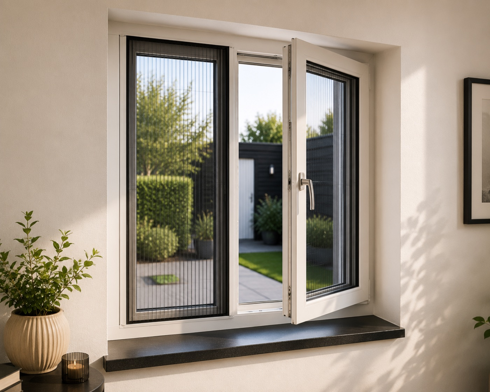

Waarom kiezen voor een raamhor
Onze raamhorren zijn ontworpen om vrijwel onzichtbaar te zijn, zowel van binnen als van buiten. Geen opvallende kunststof randen, maar een strak profiel dat naadloos aansluit op uw kozijn.
Raamhorren op maat
Geniet van frisse lucht zonder muggen, vliegen of andere insecten. Onze raamhorren worden millimeternauwkeurig op maat gemaakt voor uw kozijn en vrijwel onzichtbaar gemonteerd, voor een strak resultaat dat jarenlang meegaat.

Alles over raamhorren
Een raamhor is pas echt geslaagd als u hem nauwelijks opmerkt. Hieronder leest u alles over onze raamhorren, van materiaal tot montage.
Onze raamhorren zijn ontworpen om vrijwel onzichtbaar te zijn, zowel van binnen als van buiten. Geen opvallende kunststof randen, maar een strak profiel dat naadloos aansluit op uw kozijn.
Het profiel stemmen wij af op uw kozijnkleur.
Standaard fiberglas gaas dat veel licht doorlaat en nauwelijks zichtbaar is. Optioneel leverbaar met anti-pollen gaas of huisdierengaas.
Onze monteur meet uw kozijn nauwkeurig in en plaatst de raamhor strak en waterdicht, meestal binnen één afspraak en zonder overlast.
Een raamhor vraagt nauwelijks onderhoud: incidenteel afnemen met een vochtige doek is voldoende om het gaas jarenlang helder te houden.
Dankzij hoogwaardig materiaal en vakkundige montage gaat uw raamhor vele jaren mee. Wij geven 5 jaar garantie op product en montage.
In beeld
Waarom Veloura
Wij denken met u mee over het beste type raamhor voor uw kozijn, zonder verkooppraatje.
Wij kennen elk type raamkozijn en weten precies hoe een raamhor er strak en duurzaam in past.
Onze monteurs werken secuur, zodat uw raamhor naadloos aansluit en jarenlang meegaat.
Ervaringen
"Compleet onzichtbaar, precies wat ik wilde. Je ziet vanaf de straat niet eens dat er een hor in het kozijn zit."
"Snel gemeten, snel geplaatst. Binnen drie weken zaten alle raamhorren erin en het ziet er heel netjes uit."
"Eindelijk het raam open zonder muggen in de slaapkamer. Had dit veel eerder moeten doen."
Ook interessant
Extra opties
Deze opties kunt u eenvoudig aangeven bij uw offerteaanvraag.
Fijnmazig gaas dat ook stuifmeel grotendeels tegenhoudt, ideaal voor hooikoortsgevoelige bewoners.
Toevoegen aan offerte →Extra sterk, krasbestendig gaas dat bestand is tegen de nagels van uw hond of kat.
Toevoegen aan offerte →Nog fijnmaziger weefsel voor maximale weringskracht tegen de allerkleinste insecten.
Toevoegen aan offerte →Laat in één keer meerdere raamhorren plaatsen, wij stemmen de planning en het bezoek hierop af.
Gecombineerde offerte aanvragen →Offerte op maat
Vul uw afmetingen in en ontvang direct een prijsindicatie, of neem persoonlijk contact met ons op.
Veelgestelde vragen
De prijs van een raamhor is afhankelijk van de afmetingen van uw kozijn en eventuele extra opties, zoals anti-pollen gaas of een RAL-kleur naar keuze. Via onze offertecalculator ziet u direct een prijsindicatie op basis van uw eigen maten.
Vrijwel elk raamkozijn is geschikt voor een raamhor op maat, of het nu gaat om een draai-kiepraam, een vast kozijn of een klapraam. Bij twijfel adviseren wij u graag persoonlijk.
Onze monteur meet uw kozijn eerst nauwkeurig in en plaatst de raamhor vervolgens strak en waterdicht in of op het kozijn, meestal binnen één afspraak.
Ja, een raamhor op maat is ontworpen om het hele jaar te blijven zitten. U kunt uw raam gewoon openen en sluiten zonder de hor te hoeven verwijderen.
Raamhorren zijn leverbaar in diverse RAL-kleuren, waaronder wit, crème, antraciet, aluminium en zwart, zodat het profiel altijd aansluit bij uw kozijnkleur.
Een raamhor vraagt nauwelijks onderhoud. Regelmatig afnemen met een vochtige doek en af en toe voorzichtig stofzuigen is voldoende om het gaas jarenlang helder te houden.
Dankzij hoogwaardig materiaal en vakkundige montage gaat een raamhor van Veloura vele jaren mee. Wij geven dan ook 5 jaar garantie op onze raamhorren.
Ja, wij geven 5 jaar garantie op al onze raamhorren en de montage daarvan.
Zeker, onze raamhorren zijn geschikt voor kunststof, houten en aluminium kozijnen. Het montagesysteem stemmen wij af op uw type kozijn.
Na het gratis inmeten wordt uw raamhor speciaal op maat vervaardigd. Doorgaans houden wij een levertijd van twee tot drie weken aan tot aan de montage.